Build the Perfect Digital Assistant for Your Business
In this lab, you'll learn how to work with skills and digital assistants in Oracle Digital Assistant.
A skill is an individual chatbot that is focused on a specific set of capabilities (e.g. helping customers order food from a specific restaurant).
A digital assistant is a master chatbot containing multiple specialized skills. When a user engages with the digital assistant, the digital assistant evaluates the user input and routes the conversation to the appropriate skill. You can populate your digital assistant with skills from the Skill Store and with skills you have designed yourself.
Here’s the scenario for this lab:
You’re part of a project team building a digital assistant to allow your customers to better engage with the various businesses in a major shopping centre.
This is the early stage of building the digital assistant and currently it supports use cases for a bank and a major retail store. The next stage of the project is to add a skill to support the new pizzeria that is opening up.
Here is what you need to do:
Complete the pizza skill ensuring it can handle complex requests for personalizing your pizza.
Add this skill to the shopping centre digital assistant.
Expose this digital assistant on the shopping centre's website for easy access.
This is required in order to host the sample shopping centre website on your machine. You can install this now or wait until you get to the Channels section at the end the lab.
The ODA Client samples for JavaScript v19.1.3.0.
To get them, navigate to http://bit.ly/amcedownloads, accept the Oracle Technology Network license agreement, scroll down to the ODA Client SDKS section, and then download bots-client-sdk-js-samples-19.1.3.0.zip.
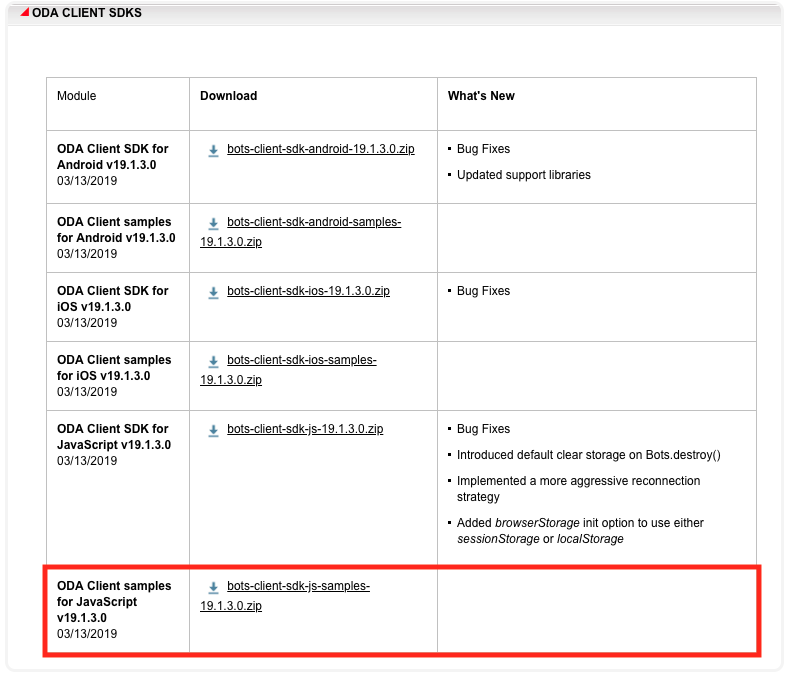
An Oracle Digital Assistant (ODA) cloud instance. You can get one using either of the following approaches:
You have special Oracle Code trial. The following process will provide you step by step instructions on how to setup your trial.
By having your own instance, you can continue this lab after the event and even build your own digital assistant.
Before you can get a trial ODA instance, you need to get an Oracle Cloud account:
Go to the link supplied by your instructor.
Fill in the Account Details section. Among the details you'll need to enter are the following:
A Cloud Account Name.
The Default Data Region, which determines where your services will be hosted. Select EMEA.
A valid email address that you used during registration.
Simply tab out of the e-mail address field.
A dialog box will appear indicating you have been invited for an Oracle Cloud Free Trial Program. Click on OK.
If you do not see this dialog box check that the e-mail address you entered is the same as what you provided at the time of registration, otherwise contact your instructor.
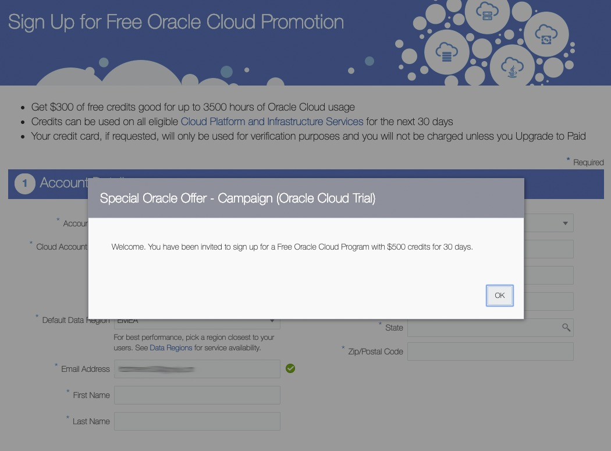
Provide rest of the detais similar to shown below. Click on Complete button.
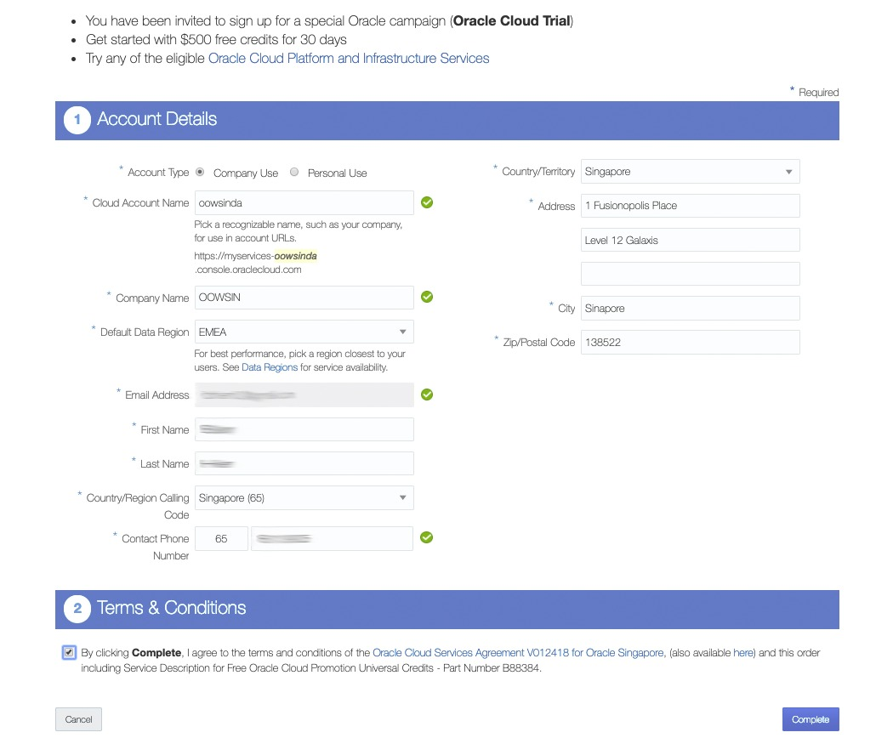
This process take about 10-15 minutes. You will receive an e-mail on the registered e-mail address as shown below.
Click on Get Started with Oracle Cloud.
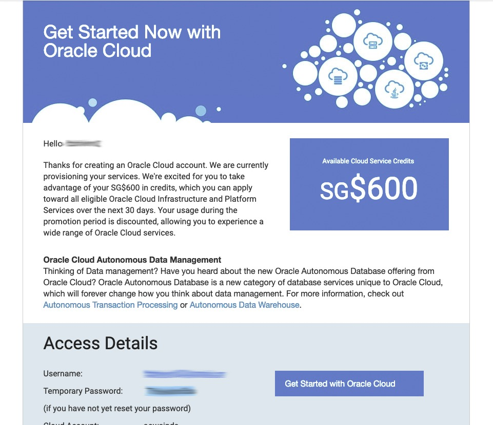
On the web page that is opened, enter the username and temporary password and click the Sign In button.
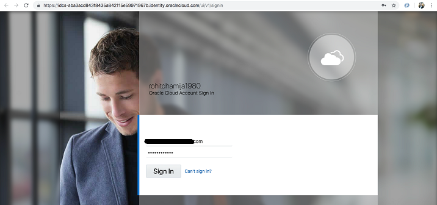
As prompted, change your password.
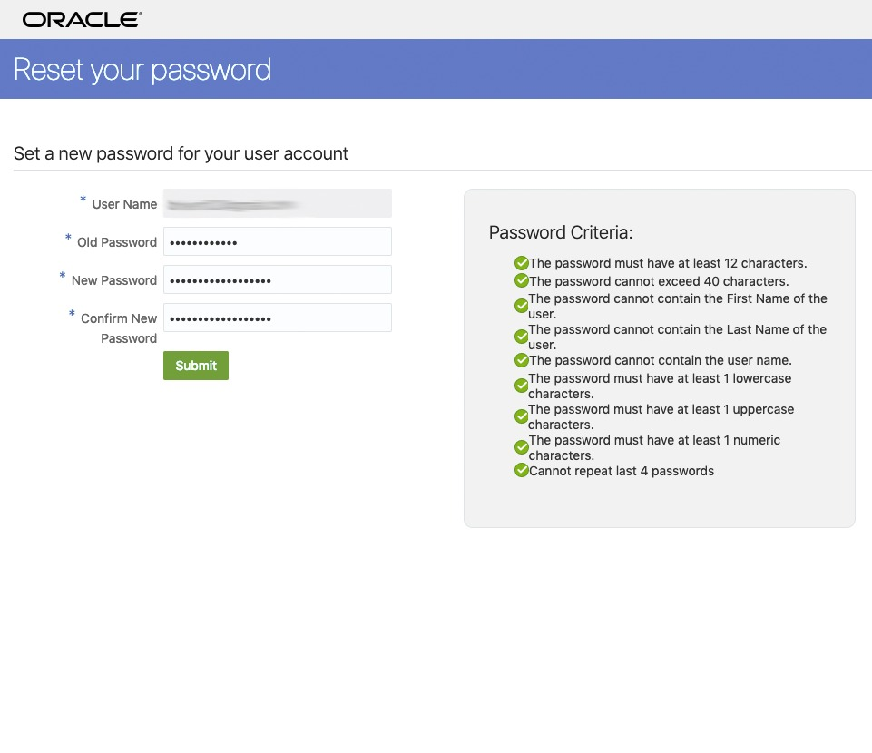
At this point, you are in your cloud account and are ready to provision an ODA instance.
Provision an Oracle Digital Assistant Instance
Click on hamburger menu on top left, navigate to the last, choose My Services Dashboard.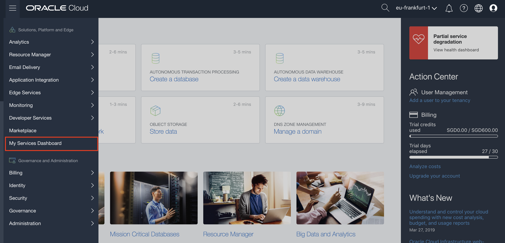
In the My Services Dashboard, click Create Instance.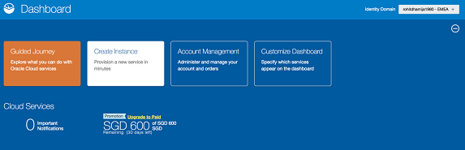
Select the All Services tab and click the Create button on the Digital Assistant tile.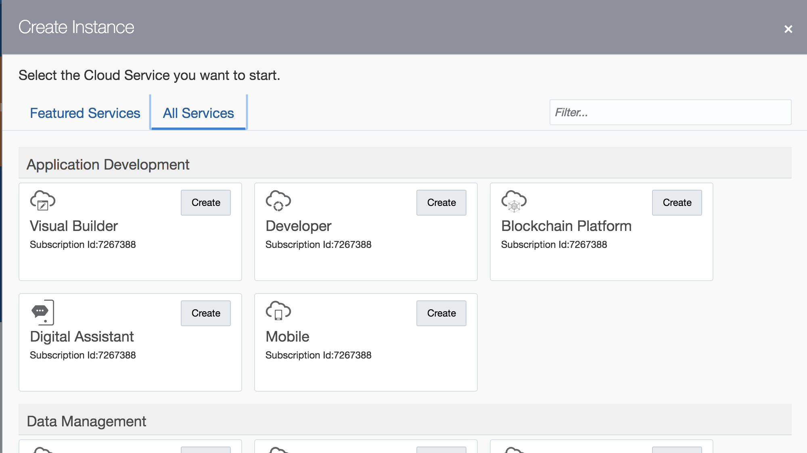
On the next screen that appears, click Create Instance.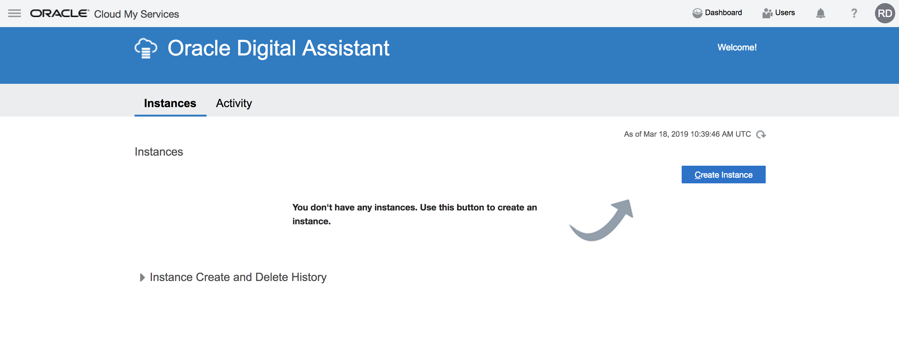
Fill in the Instance Name, check the option "I have special instructions from Oracle" field and enter Placement tag value as provided by your instructor. Leave the other fields with their default values, and click Next.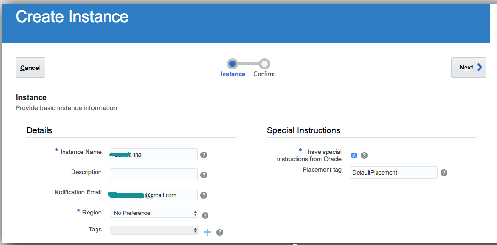
On the Confirm page, click Create.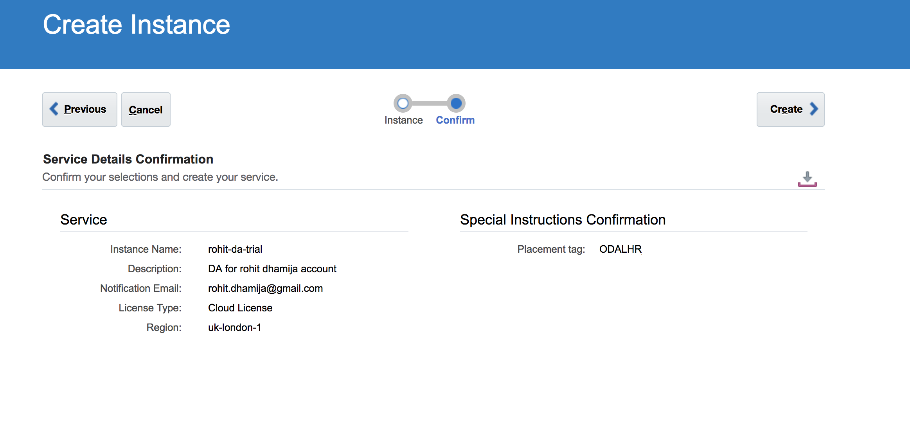
Within a few minutes your service should be created. On the Instances page, you can check the progress in the Status field.
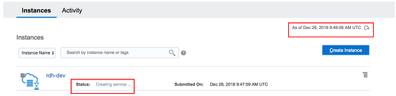
If it takes more than a few minutes to finish, try refreshing the page in the browser.
Once the instance is created, click and select Digital Assistant UI Designer.
A new browser tab will be opened with the Digital Assistant Designer UI.
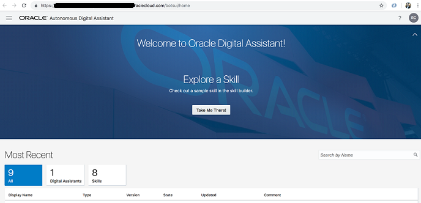
Import the Starter Skill and Digital Assistant to Your Instance
Now let's prepare our demo environment by setting up the starter pizza skill and starter shopping centre digital assistant.
Import the Pizza Skill:
With the Oracle Digital Assistant UI open in your browser, click 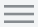 to open the side menu.
Click Development and select Skills.
Click again to collapse the side menu.
Import the skill by clicking the Import Skill button that is highlighted in red in the screenshot below.
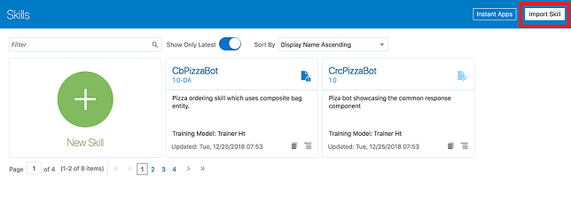
Navigate to PizzaSkill_starter.zip on your system and click Open.
In the skills dashboard, select the PizzaSkill tile to open the skill designer.
Import the Starter Digital Assistant
With the ODA UI open in your browser, click to open the side menu.
Click Development and select Digital Assistants.
Click again to collapse the side menu.
Click Import Digital Assistant.
Navigate to ODA_HOL2019.zip on your system and click Open.
In the Digital Assistants dashboard, select the ODA_HOL2019 tile to open the DA designer.
If you cannot spot the ODA_HOL2019 DA, type ODA_HOL2019 into the Filter field located above the New Digital Assistant tile.
By importing the ODA_HOL2019 DA, you have added a digital assistant and two skills to your instance:
ODA_HOL_2019 (digital assistant)
RetailBot (skill)
FinancialBot (skill)
You are now ready for the main part of the lab. Skip ahead to the Design the Pizza Skill section.
In this part of the lab, we'll complete development of the Pizza Skill that has been started for us. After familiarizing ourselves with the starter skill, we'll:
Create a composite bag entity to consolidate existing entities which represent the different variable elements of the pizza (size, topping, delivery time etc) and make it easier to manage entities from the dialog flow.
Add logic to the skill's dialog flow to manage the pizza ordering process.
Train and test the skill.
Publish the skill so that it can be used in a digital assistant.
Explore and Test the Skill
The conversational AI use case you are working with is a skill for ordering pizza. To familiarize yourself with the designer and the skill itself, try it out by following these steps:
In ODA, click to open the side menu.
Click Development and select Skills.
Click again to collapse the side menu.
In the skills dashboard, select your copy of PizzaSkill.
In the left navigation for the designer, select .
Click the OrderPizza intent and quickly observe the utterances.
In the left navigation for the designer, select .
Select the PizzaDough entity and look at the way that it is configured.
Repeat the above step for PizzaSize and PizzaTopping.
Locate the Train button () on the right side of the page, click it, click Submit, and then wait a few seconds for the training to complete.
Find the Skill Tester icon () in the bottom of the skill's left navigation bar and click it.
In the tester's Message field, type I want to order pizza, click Send, and note the skill's response.
For now it's just a static response. It will become more dynamic once we add logic to the dialog flow.
Click the Reset button at the top of the tester window and then close the tester.
Add a Composite Bag Entity
When a customer orders a pizza, details such as toppings, size, and crust need to be specified. In PizzaSkill, each of these variables is represented by an entity.
The challenge for any chatbot is that the user can include varying subsets of the required information in their initial input. For example, one person might specify the size and topping, but not the type of crust. And another person might specify only the crust. In each case, the skill should recognize any entities supplied in the original input, and prompt for those that are not.
In this step, we’ll create a composite bag entity, which is a special entity that automatically recognizes and prompts for the appropriate entities for a pizza order. In addition to our custom entities (PizzaSize, PizzaTopping, PizzaDough), we'll include a system entity for DeliveryTime.
Create the Composite Bag Entity:
Select and click to create a new entity.
In the Name field, change the value to PizzaBag.
In the Configuration section, in the Type dropdown, select Composite Bag.
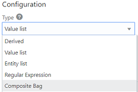
Add Bag Items for the PizzaSize, PizzaTopping, PizzaDough, and DeliveryTime Entities
Click .
On the Add Bag Item page, fill in the following values:
Name:PizzaSize
Type:Entity
Entity Name:PizzaSize (If prompted in a popup, select Overwrite.)
Maximum User Input Attempts:4
Error Message:Sorry, '${system.entityToResolve.value.userInput!'this'}'
is not a valid size of pizza.
Click .
For the value, enter What size of pizza would you like?
Again, click .
For the value, enter Please choose small, medium or large.
Click Close.
Again, click .
Click Close.
On the Add Bag Item page, fill in the following values:
Name:PizzaTopping
Type:Entity
Entity Name:PizzaTopping (If prompted in a popup, select Overwrite.)
Error Message:Sorry, we don't have that topping
Prompt for Disambiguation:switched ON
Disambiguation Prompt:Sorry you can only order one topping type
Click Close.
Again click .
On the Add Bag Item page, fill in the following values:
Name:PizzaDough
Type:Entity
Entity Name:PizzaDough
Out of Order Extraction:switched ON
Prompt for Value:false
Click Close.
For the fourth (and final) time, click .
On the Add Bag Item page, fill in the following values:
Name:DeliveryTime
Type:Entity
Entity Name:TIME
Maximum User Input Attempts:4
Scroll down to the Prompts section, replace the existing prompt with When can we deliver that for you?, and press Enter.
Click .
In the Expression field, enter ${(pizza.value.DeliveryTime.hrs?number < 10)?then('true','false')}
In the Error Message field, enter Sorry, we only deliver up to 9:30pm and press the Enter key.
Click Close.
Here is what the PizzaBag composite bag should look like in the designer:
Associate the Entity with the Intent
Now we need to associate the PizzaBag composite entity to the OrderPizza intent so that we can extract the key words and phrases from the user input.
Select .
Select the OrderPizza intent.
Click the button and select PizzaBag from the dropdown. See this screenshot to help locate the button:
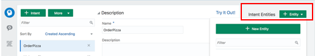Intent Entities label and dropdown for entities that you can add to the intent.">
Implement the Pizza Ordering Logic
Next we need to write logic for the skill to understand the user query and respond accordingly. We'll do this in the dialog flow where we can choreograph the interaction between the skill and its users.
Click .
Within the context variables section, add this entry: pizza: "PizzaBag"
Important: For all dialog flow examples, make sure that you get the indentation exactly right. Each state starts with two spaces of indentation. With each additional level of indentation, you add two more spaces.
Update the text and transitions properties in the startOrderPizza state:
startOrderPizza:
component: "System.Output"
properties:
text: "ok lets get that order sorted"
keepTurn: true
transitions: {}
Below the startOrderPizza state, add new resolveEntities, setPizzaDough, showPizzaOrder, and maxError states:
resolveEntities:
component: "System.ResolveEntities"
properties:
variable: "pizza"
nlpResultVariable: "iResult"
maxPrompts: 3
cancelPolicy: "immediate"
transitions:
actions:
cancel: "maxError"
next: "setPizzaDough"
setPizzaDough:
component: "System.SetVariable"
properties:
variable: "pizza.PizzaDough"
# value set for the variable.
value: "${pizza.value.PizzaDough?has_content?then(pizza.value.PizzaDough,'regular')}"
showPizzaOrder:
component: "System.Output"
properties:
text: "Ok so we are getting you a ${pizza.value.PizzaSize} ${pizza.value.PizzaTopping} at ${pizza.value.DeliveryTime.date?long?number_to_time?string('HH:mm')}. This will be on our ${pizza.value.PizzaDough} base "
transitions:
return : "showPizzaOrder"
maxError:
component: "System.Output"
properties:
text: "OK lets connect you with someone to help"
transitions:
return: "maxError"
Notes on What We Just Did
We have added a context variable pizza of type PizzaBag and used it in the resolveEntities state. This state is called when the OrderPizza intent is resolved.
The resolveEntities state calls a system component (System.ResolveEntities), iterates through all the entity fields in the composite bag, converses with the user, and resolves all the fields.
The setPizzaDough state checks if the dough value is null. If yes, then it sets it to regular.
Once all the entities are resolved, we output the pizza details in the showPizzaOrder state.
The maxError state is called if the number of attempts for an entity in the bag has reached the value of maxPrompts.
Validate and Train PizzaSkill
Click the Validate button to validate the skill.
(The Validate button is in the top navigation, next to the Instant Apps button.)
If validation fails, delete the code in the dialog flow, replace it with the contents of the PizzaSkill_BotML.json file, and validate the flow again.
Click , click Submit, and then wait a few seconds for the training to complete.
Test PizzaSkill
Find the Skill Tester icon () in the bottom of the skill's left navigation bar and click it.
Type I want to order a medium pizza in the Message field and click Send.
Click the Intent/QnA tab and observe the Entity Matches section.
You'll notice that the PizzaSize value is set to Medium:
Click the Reset button.
Now try Can I place an order for a medium meaty pizza to be delivered at 9:00 PM and observe the response:
Click Reset.
Now let’s try one with a gluten-free base by typing: A small veggie pizza to be delivered at 8:00pm, also can you please make it gluten-free?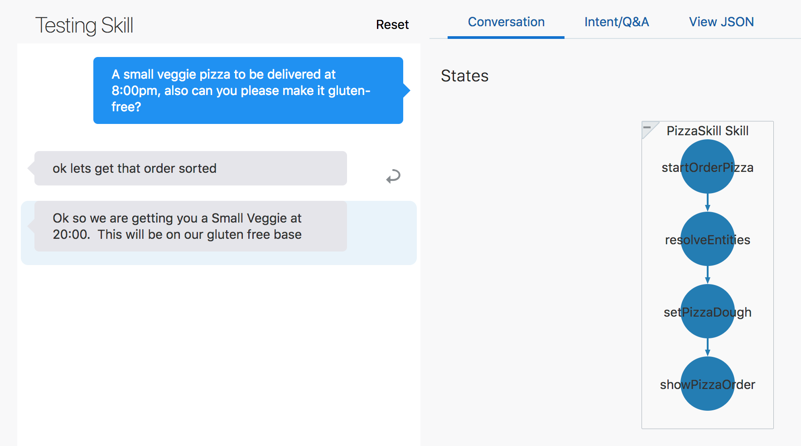
Click Reset.
Now try Can I place an order for a medium meaty pizza to be delivered at 10:00 PM.
This should result in the following response:
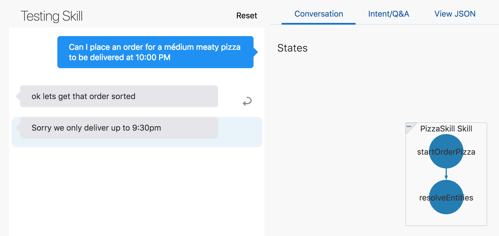
Click Reset.
Now try Can I place an order for a small medium meaty pizza to be delivered at 9:00 PM and see what you get.
Click Reset.
Now try Can I place an order for a small sausage pizza to be delivered at 9:00 PM and see what you get.
Click Reset.
Next try I want a small meaty pizza.
The skill asks at what time to deliver the pizza.
To see how the skill reacts when the user changes his mind mid-stream, type actually make it large and press Enter.
When the skill repeats the question about delivery time, type 9:00 PM.
This is what the conversation should look like:
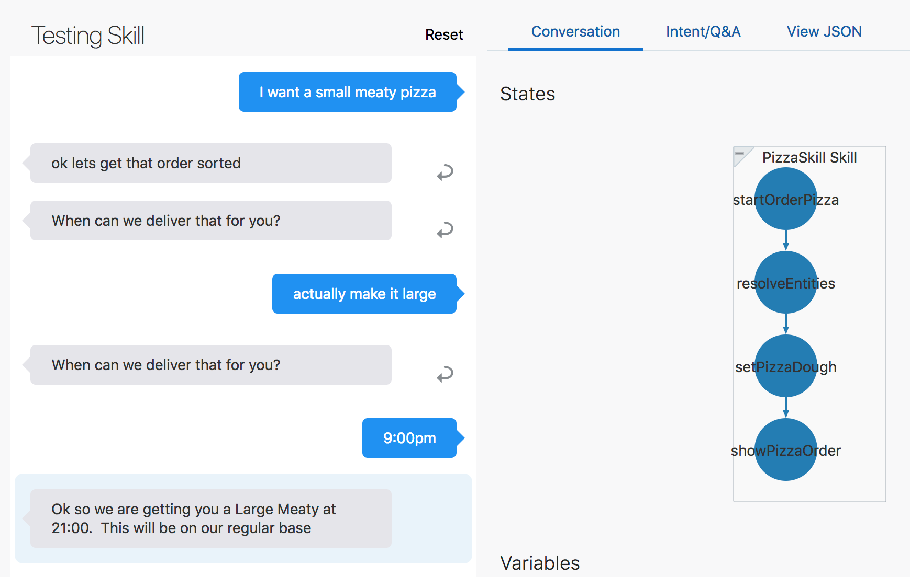
As you can see, the skill was able to incorporate the change in the order and continue without missing a beat.
Using the composite entity, we are able to resolve all the entities in a single customer query!
Now that we are done building the skill, we'd like to add it to our digital assistant.
However, to make the skill available to be added to a digital assistant, we first need to publish it:
Click to open the side menu.
Click Development and select Skills.
Click again to collapse the side menu.
In the skills dashboard, find the tile for your copy of PizzaSkill.
Click the skill's Options menu () and select Publish.
On the Publish Skills page, click Publish.
Once you have published the skill, note the icon on the skill's tile that shows it is now read-only.
Congrats! Your skill is now ready to be added to a digital assistant!
Set Up the Shopping Centre Digital Assistant
Digital assistants are virtual personal assistants that users can interact with using natural language. When a user engages with the digital assistant, the digital assistant evaluates the user input and routes the conversation to the appropriate skill.
Among other things, the digital assistant:
Greets the user upon access.
Upon user request, lists what it can do and provides entry points into the given skills.
Routes explicit user requests to the appropriate skill.
Handles interruptions to flows.
Handles disambiguation.
Handles requests to exit the bot.
Explore the Digital Assistant
The starter digital assistant (or, DA for short) that you just cloned consists of two skills – FinancialBot and RetailBot. Later, we'll add PizzaSkill to the DA.
To familiarize yourself with the DA, try it out by following these steps:
Click to open the side menu.
Click Development and select Digital Assistants.
Click again to collapse the side menu.
On the Digital Assistants dashboard, find the tile for your copy of ODA_HOL2019 and select it to open it up in the designer.
Ensure the Skills icon is selected ().
Notice that FinancialBot and RetailBot are listed there.
Select the RetailBot skill and browse the attributes of its description and interaction model.
Select the FinancialBot skill and browse the attributes of its description and interaction model.
Select .
Note the three intents.
These are built in to all digital assistants. Here's what they are for:
exit: applies when the user signals the desire to exit the current conversation or context in the digital assistant.
help: applies when the user asks for help or orientation.
unresolvedIntent: applies to user input that doesn't match well with the exit and help intents.
Click and select the Configurations tab.
Notice the Routing Parameters, Conversation Parameters and Other Parameters sections.
Click , click Submit, and then wait a few seconds for the training to complete.
Find the tester icon () in the bottom of the DA's left navigation bar and click it.
In the tester's Message field, type help me, press Enter, and note the DA's greeting and initial menu.
Click the Reset button.
Now try entering Do I have enough money in my savings account, pressing Enter, and observing the response.
Close the tester.
Add PizzaSkill to the DA
With a new pizzeria opening in the shopping centre, we want the digital assistant to support this merchant as well. So let's add the PizzaSkill to our digital assistant and then train the digital assistant so that it can work with the new skill:
In your DA, select .
Click .
Find the tile for your copy of PizzaSkill.
Note: The skill won't appear there if you haven't completed the Publish the Skill part of the lab.
In the tile for your skill, click .
Click Close to close the Skill Catalog.
Click , click Submit, and then wait a few seconds for the training to complete.
Personalize Your Digital Assistant
Once you have created a digital assistant and added skills to it, you can customize some of the aspects of the digital assistant, such as the invocation name of the digital assistant’s skills and the language in the digital assistant’s help and exit intents.
Change the Invocation Name
An important part of configuring any skill is coming up with a good invocation name, which is used in explicit invocation of the skill. Here are the steps to change the invocation name of recently added skill:
In your DA, select .
Select Pizza Skill.
Scroll down to the Interaction Model section of the page and change the Invocation Name to Pizza King.
Change the example utterance to Order Pizza.
Test the Invocation Name
Now let’s try various invocation patterns and see whether and how the digital assistant responds:
Click the tester icon ().
In the tester's Message field, type Go to Pizza King to place my pizza order, press Enter, and note the DA's response.
Click the Reset button.
Now try Pizza King.
Click Reset.
Now try Pizza King to check my order.
Click Reset.
Now try I want a large meaty pizza from pizza king.
Click Reset.
Now try Can you use Pizza King to place an order.
Click Reset.
System Intents and Prompts
You can customize the built-in system intents and the prompts that are driven by them.
First, let's add some utterances to the built-in help intent:
In your DA, select .
Select the help intent.
In the Examples section, add the following utterances:
Can someone help me
What can you do
What things do you do
What can I ask you
The digital assistant comes with configurable prompts to respond to various types of user input. These prompts can be modified in the DA's configuration settings.
Let's modify the DA's help prompt:
In the DA, click and select the Configurations tab.
Scroll down to the Conversation Parameters section of the page.
Modify the value of Digital Assistants Help Prompt to Welcome! I can do following things for you:
Click , click Submit, and then wait a few seconds for the training to complete.
Test the Utterances and Modified Prompt
To see the new utterances and prompt in action:
Click the tester icon ().
In the tester's Message field, type Can someone help me, press Enter, and note the DA's response.
Evaluate Routing Behaviors
Before putting the digital assistant into production, let’s use the tester to evaluate various aspects of its routing behavior.
Open the tester by clicking the tester icon ().
No Match
In the tester's Message field, type I want a burger and press Enter.
Since no match is found in the DA and skill, it generates the DA-level help card:
Note: Only the Pizza King shows in the screenshot, but you can use the horizontal scroll arrows to see the cards for the other skills.
Click Reset.
Implicit Invocation
In the tester's Message field, type Send money and press Enter.
Notice that the routing resolves to the Digital Bank candidate skill and its Send Money intent:
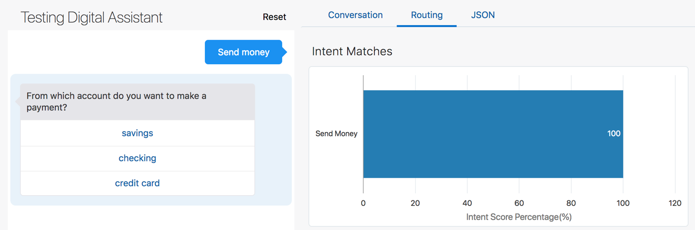
Note: "Digital Bank" is the invocation name of FinancialBot.
Click the Routing tab and scroll down.
Notice the intent evaluation that leads to this response:
Click Reset.
Note: In these examples, you might get slightly different results than what are shown here, especially in the confidences scores (given in percentages) when resolving intents. And in some cases, the resolved intents could vary, should the differing confidence scores push those intents above or below the given confidence thresholds. The cause of this variance is the non-deterministic nature of the AI behind the natural language processing and the fact that these bots have a limited number of training utterances (in order to make the lab simpler).
Explicit Invocation
In the tester's Message field, type I want to send money from Digital Bank and press Enter.
Here’s the user’s input and the digital assistant’s initial response:
Click the Routing tab and scroll down to the Rules section and notice the rule that is displayed.
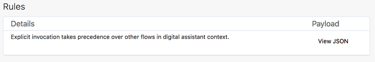
In the Intent Calls section, you can see that the Digital Bank skill gets a much higher confidence score than the other skills.
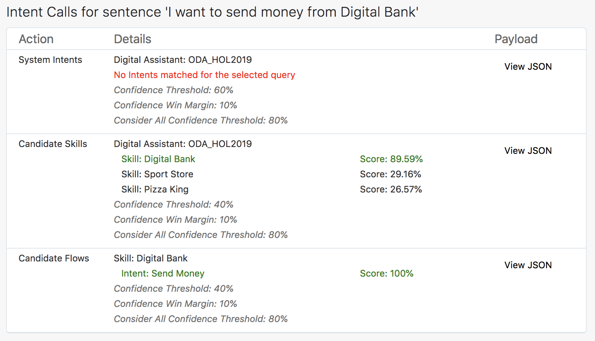
Click Reset.
Ambiguous Utterance
In the tester's Message field, type What is my balance? and press Enter.
Here’s the conversation:
As you can see, the digital assistant is unsure of what the user wants to do, so it provides a prompt asking the user to choose among the Sport Store (which is the invocation name for the RetailBot skill) and Digital Bank skill intents.
Click the Routing tab and scroll down.
Notice the evaluation in the Intent Calls section that leads to this response:
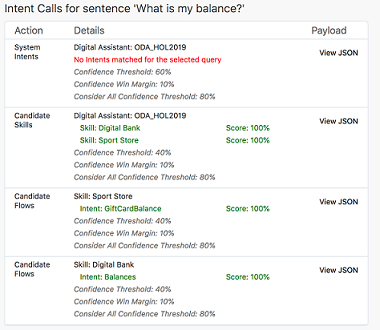
Both the candidate skills got high scores (100%). And then for each of those skills, the router identified a candidate flow that also scored highly (also 100%).
Since the GiftCardBalance and Balances candidate flows exceed the confidence threshold, and since difference between their scores is less than the Confidence Win Margin value (10%), the digital assistant asks the user to choose between those intents.
Click Reset.
Context Awareness
In the tester, type What is my balance? and press Enter.
Here’s the conversation:
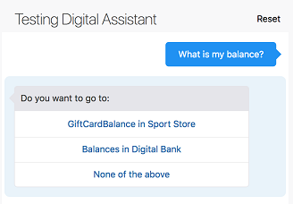
Select Balances in Digital Bank.
Select checking.
.
Again, type How much do I have in my savings?
Here is the response:
.
Click Reset.
Notes on What We Just Did
As you can see, the user starts with the question "What is my balance?", goes through a prompt to disambiguate between the Digital Bank skill and the Sport Store skill, and eventually gets her checking account balance. Then the user enters "What is my balance?" again, but this time doesn't have to navigate through any disambiguation prompts. The info in the Routing tab helps to explain why.
Also note that in the Rules section of the Routing tab, you see the following:
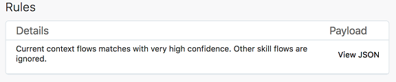
So, even though there are matching intents from the Sport Store skill, they are ignored. The Intent Calls section shows all of the matching intents, but the entry for “Current Context”, which contains only the Digital Bank skill’s Balances intent, is decisive.
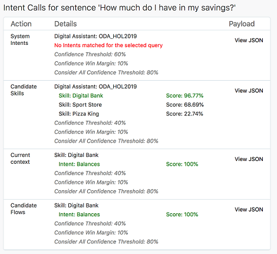
Non sequitur
Non sequitur refers to interrupting a conversation flow by changing the subject. Here's an example where such interruptions occur because the user needs info from one skill to complete the flow in another skill.
In the tester, type I want to order a small meaty pizza and press Enter.
Pizza Skill is invoked and here is the response:
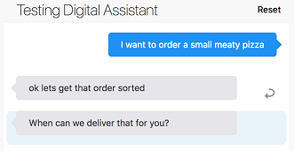
To simulate the user suddenly being unsure if he has enough money, type the following: oh, do I have enough money on my credit card?
At this point the DA detects that the intent corresponds to the Digital Bank skill and asks if user wants to switch to Balances in Digital Bank:
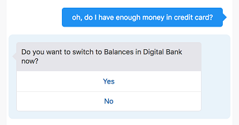
Select Yes.
The user is presented with his financial details, thus completing that flow. At that point, the DA asks if it can return back to PizzaSkill.
Again, select Yes.
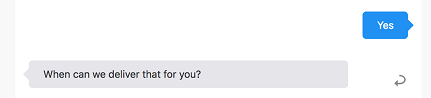
The DA returns to PizzaSkill and resumes the conversation where you left it:
Type 9:00 PM and press Enter.
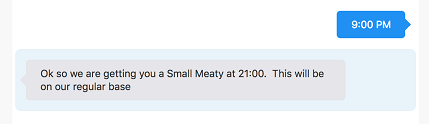
In this sequence, you started ordering a pizza, confirmed you had enough money in your account, and finished ordering the pizza.
Non sequitur – Complex Conversation
Let’s try a more complex conversation:
In the tester, type I want to order a large pizza at 9:00 PM today and press Enter.
Instead of selecting the kind of pizza, type oh, do I have enough money?
At this point, the DA will ask you to switch to Balance in Digital Bank.
Select Yes.
Now, instead of selecting the account type, type how about my gift card balance?
The DA asks if you want to switch to GiftCardBalance in Sport Store.
Select Yes.
Type GC100 as the gift card number and press Enter.
The DA informs you of your gift card balance.
Then the DA asks if you want to return to Balance in Digital Bank.
Select Yes.
Select savings as your account type.
The DA fetches the savings account details for you and asks if you want to return to OrderPizza in Pizza King.
Select Yes.
Select any of the options for the kind of pizza you want to order.
Observe the states flow in the Conversation tab.
You are now done with creating, personalizing, and evaluating the routing behavior of your digital assistant! In the next section, we'll add it to a web channel through which users can access it.
Add the Digital Assistant to the Web Channel
Channels carry the chat back and forth from users on various messaging platforms to the digital assistant.
In this lab, we'll configure and publish our DA through a web channel, install a sample client application, and run and test it against the DA.
Create a New Channel
Click to open the side menu.
Click Development and select Channels.
Click again to collapse the side menu.
On the Users tab, click + Channel.
In the Create Channel dialog, fill in the Name, Description, and App Display Name fields.
Important: If you are using the shared instance for this lab, be sure to include your initials in the Name and App Display Name fields so that they are distinct from those of other lab participants.
From the Channel Type dropdown, select Web.
The completed dialog might look something like this:
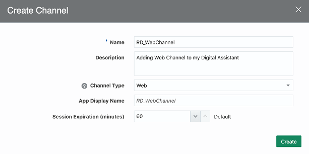
Click Create.
Once created, you are returned to the page for the channel.
Open the Route To dropdown menu, enter your DA name in the Filter box, and select your DA.
Switch Channel Enabled to ON.
Copy the the value of the App Id field to a text file.
You will use it later on this lab while running the sample client application.
Set Up the Web Channel on Your Local Machine
For purposes of this lab, we'll set up using your machine's localhost instead of using a public-facing web server.
Find the bots-client-sdk-js-samples-19.1.3.0.zip file that you downloaded at the beginning of this lab and extract its contents.
Open a terminal window or command prompt and navigate to the chat-sample-web directory of the contents of the extracted zip.
Run the following command:
npm install
Start the sample ChatSample app by running the following command:
node server.js
After running this command, you should see a message indicating that the server is listening on port 3000.
 Build the Perfect Digital Assistant for Your Business
Build the Perfect Digital Assistant for Your Business Before You Begin
Before You Begin and select Digital Assistant UI Designer.
and select Digital Assistant UI Designer.

 Design the Pizza Skill
Design the Pizza Skill .
. .
. ) on the right side of the page, click it, click Submit, and then wait a few seconds for the training to complete.
) on the right side of the page, click it, click Submit, and then wait a few seconds for the training to complete. to create a new entity.
to create a new entity. .
.
 .
.


 Set Up the Shopping Centre Digital Assistant
Set Up the Shopping Centre Digital Assistant and select the Configurations tab.
and select the Configurations tab. .
. Personalize Your Digital Assistant
Personalize Your Digital Assistant